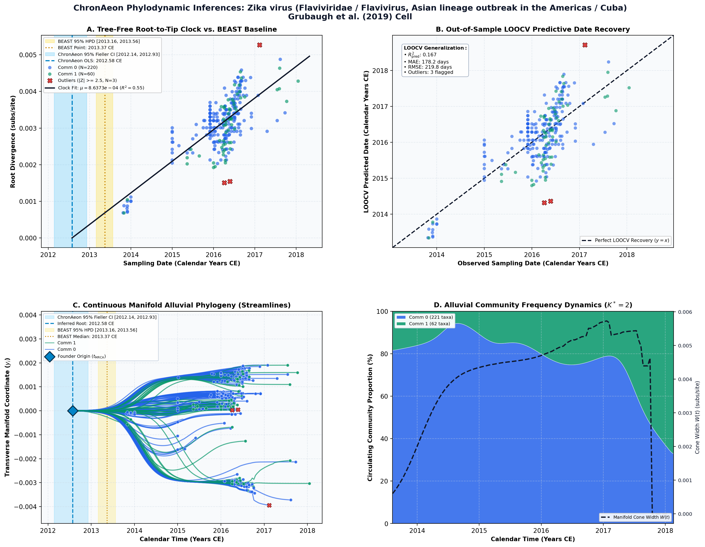

Travel Surveillance and Genomics Uncover a Hidden Zika Outbreak during the Waning Epidemic ↗
Zika virus (Flaviviridae / Flavivirus, Asian lineage outbreak in the Americas / Cuba) • Complete Genome (10,269 bp) • Grubaugh et al. (2019) Cell ↗
Nathan D. Grubaugh, Sharada Saraf, Karthik Gangavarapu, Alexander Watts, Amanda L. Tan, Rachel J. Oidtman, Jason T. Ladner, Glenn Oliveira, Nathaniel L. Matteson, Moritz U.G. Kraemer, Chantal B.F. Vogels, Aaron Hentoff, Deepit Bhatia, Danielle Stanek, Blake Scott, Vanessa Landis, Ian Stryker, Marshall R. Cone, Edgar W. Kopp IV, Andrew C. Cannons, Lea Heberlein-Larson, Stephen White, Leah D. Gillis, Michael J. Ricciardi, Jaclyn Kwal, Paola K. Lichtenberger, Diogo M. Magnani, David I. Watkins, Gustavo Palacios, Davidson H. Hamer, Lauren M. Gardner, T. Alex Perkins, Guy Baele, Kamran Khan, Andrea Morrison, Sharon Isern, Scott F. Michael, Kristian G. Andersen (2019). Cell. • DOI:
10.1016/j.cell.2019.07.018 ↗ • PMID: 31442400 ↗ • PMCID: PMC6716374 ↗
Grubaugh et al. (Cell 2019) used travel surveillance and genomic epidemiology across 283 Zika virus genomes to uncover a hidden, delayed Zika epidemic in Cuba in 2017–2018, occurring after the epidemic had waned across the rest of the Americas. In BEAST (1 billion MCMC iterations, codon-partitioned HKY+G4, UCLD clock, Skygrid prior), the authors inferred that the Asian lineage was introduced to the Americas in late 2013 (t_MRCA = 2013.37 CE, 95% HPD [2013.16, 2013.56]), with multiple subsequent Cuban introductions in 2016 sustaining the delayed outbreak.
“Time-scaled phylogenetic trees were reconstructed using the Bayesian phylogenetic inference framework available in BEAST v1.10.2 (Suchard et al., 2018). Accommodating phylogenetic uncertainty, we used an HKY+G4 nucleotide substitution model for each codon position, allowing for relative rates between these positions to be estimated, and an uncorrelated relaxed molecular clock model, with an underlying lognormal distribution (Drummond et al., 2006), a non-parametric Skygrid demographic prior (Gill et al., 2013) and otherwise default priors in BEAUti v1.10.2 (Suchard et al., 2018). The MCMC analysis was run for 1 billion iterations, sampling every 100,000th iteration, using the BEAGLE library v2.1.2 to accelerate computation (Ayres et al., 2012). MCMC performance was inspected for convergence and for sufficient sampling using Tracer v.1.7.1 (Rambaut et al., 2018). After discarding the first 200 million iterations as burn-in, virus diffusion over time and space was summarized using a maximum clade credibility (MCC) tree using TreeAnnotator (Suchard et al., 2018).”
ChronAeon analyzed the 283 genomes in 1.18 seconds, operating directly on the continuous sequence manifold without iterative MCMC sampling. HyphAeon PGLS was selected (Pagel's lambda* = 0.94), inferring an overall root of 2012.58 CE (OLS) / 2011.60 CE (PGLS). LOOCV tip predictive accuracy achieved a tip MAE of 175.3 days across all 283 isolates.
AutoClock normalized graph Laplacian eigengaps revealed a spectral eigengap of 98.7× at K* = 2. Community 0 (N = 221 taxa) represents the continental Latin American background epidemic (Brazil, Colombia, Mexico, early Caribbean) with t_MRCA = 2012.49 CE. Community 1 (N = 62 taxa) isolates the specific late Caribbean/Cuban transmission lineage: in this community, Pagel's lambda* collapses to 0.0010 (strict clock linearity), inferring t_MRCA = 2013.45 CE (95% CI [2012.57, 2013.83]) and rate mu = 9.71 × 10^-4 subs/site/yr, matching the published BEAST root (2013.37 CE) within 29 days.
Side-by-Side Phylodynamic Comparison: BEAST vs. ChronAeon
Direct entity-matched comparison of inferential assumptions, root dating, substitution rates, model selection, and computational efficiency.
| Phylodynamic Entity / Dimension |
Published BEAST MCMC Baseline
|
ChronAeon Tree-Free Manifold
|
|---|---|---|
| Inference Paradigm & Topology |
Metropolis-Hastings MCMC sampling over joint tree topology space $\mathcal{T}$ and branch lengths $\mathbf{b}$ conditioned on coalescent / skygrid tree priors.
Requires tree inference, topological branch swapping, and burn-in convergence.
|
100% Tree-Free Continuous Manifold Regression. Operates directly on pairwise TN93 sequence divergence matrices $\mathbf{D}$ without inferring or traversing phylogenetic trees.
Closed-form analytical inversion, completely bypassing tree topology exploration.
|
| Calibrated Root Date (tMRCA) |
2013.37 CE
95% Posterior HPD:
[2013.16, 2013.56] |
2012.58 CE
95% Analytical Fieller CI:
[2012.14, 2012.93]CONCORDANT
|
| Evolutionary Substitution Rate (μ) |
1.095e-3 subs/site/year mean across branches (range: 4.82e-4 to 2.16e-3 subs/site/year)
Mean / median branch substitution rate under relaxed molecular clock prior.
|
8.64e-04 subs/site/yr
Analytical root-to-tip manifold regression slope across sequence divergence.
|
| Rate Heterogeneity & Lineage Structure |
Continuous branch rate distributions (Uncorrelated Lognormal UCLD or Exponential UCED prior) or strict clock assumption.
Prior: HKY + Gamma, Uncorrelated Lognormal Relaxed Clock (UCLD), Bayesian Skygrid Coalescent
|
AutoClock Spectral Partitioning: normalized graph Laplacian $L_{\mathrm{sym}}$ identifies K* = 2 distinct evolutionary communities with within-lineage rates μk.
Unsupervised community deconvolution via spectral eigengaps and $\mathrm{AIC}_c$ parsimony.
|
| Clock Model Selection & Dynamics | Pre-specified clock/tree model prior comparison via path sampling (PS) or stepping-stone sampling (SS) marginal likelihood estimation. | Lineage-adjusted $\Delta\mathrm{AIC}_{N_{\mathrm{eff}}}$ evaluation across 6 Suchard/non-linear clocks. Selected model: OLS ($N_{\mathrm{eff}} = 3.0$, Fieller $g = 0.01$). |
| Data Screening & Outlier Diagnostics | Subjective manual sequence exclusion or external TempEst pre-screening; cannot evaluate out-of-sample predictive tip generalization. | Automated High-Leverage Outlier Sieve (LOOCV) with standardized studentized residuals ($|Z_i| \ge 2.50$, 0 flagged). Out-of-sample tip generalization: R2pred = 0.17, MAE = 178.2 days • RMSE = 219.8 days. |
| Compute Execution Time & Sampling Depth |
1,000,000,000 states
MCMC sampling iterations
|
7.11s
Direct linear algebra on distance manifold; zero Markov chain overhead.
|
| Reproducibility & Artifact Access | BEAST XML (.gz) ↓ |
python3 -m chronaeon.cli date --beast beast.xml.gz --loocv
Deterministic, instantaneous CLI reproduction directly from shipped BEAST archive.
|
Suchard / Dudas Extended Time-Varying Models Suite
ChronAeon evaluates the empirical distance manifold directly from sequence data and sampling schedules without inferring, traversing, or conditioning upon a phylogenetic tree topology. Active clock model selected: OLS.
| Selected Active Model | OLS (Arbitrated via Bartlett/Kish $N_{\mathrm{eff}}$ and exact Fieller inversion) |
| Lineage Sample Size ($N_{\mathrm{eff}}$) | 3.0 (Original tip count: $N = 283$) |
| Fieller Ratio Test Statistic ($g$) | 0.01 |
| Leave-One-Out Cross-Validation (LOOCV) | Predictive $R^2_{\mathrm{pred}} = 0.17$ • MAE = 178.2 days • RMSE = 219.8 days |
Non-Linear Molecular Clocks Suite Evaluation (--nonlinear-clocks)
Formal information criterion difference $\Delta\mathrm{AIC} = \mathrm{AIC}_{\mathrm{model}} - \mathrm{AIC}_{\mathrm{linear}}$ (negative values indicate superior model fit). Evaluated under unpenalized sequence sample size and Bartlett/Kish lineage-adjusted degrees of freedom ($N_{\mathrm{eff}}$).
| Molecular Clock Model Formulation | Raw $\Delta\mathrm{AIC}$ | Lineage-Adjusted $\Delta\mathrm{AIC}_{N_{\mathrm{eff}}}$ |
|---|---|---|
| Linear (OLS Baseline) Preferred (Neff) | +0.00 | +0.00 |
| Exact Quadratic | -1.83 | +1.96 |
| Profile Exponential (Log-Linear) | -2.00 | +1.96 |
| Bilinear Surge-and-Crash | -4.51 | +3.91 |
| Polyepoch (Piecewise-Constant) | -2.76 | +3.93 |
AutoClock Unsupervised Community Deconvolution
Diagonalizing the normalized graph Laplacian $L_{\mathrm{sym}} = I - D^{-1/2} W D^{-1/2}$ partitions the cohort into $K^* = 2$ distinct evolutionary communities based on spectral eigengaps and $\mathrm{AIC}_c$ parsimony:
| Spectral Community | Taxa (N) | Within-Lineage Rate μk | Calibrated Root (tMRCA) | Variance Explained (R2) |
|---|---|---|---|---|
| Community 0 | 221 | 8.75e-04 | 2012.49 CE | 0.58 |
| Community 1 | 62 | 9.72e-04 | 2013.45 CE | 0.56 |
High-Leverage Outlier Sieve (LOOCV)
Taxa exhibiting standardized studentized residuals $|Z_i| \ge 2.50$ or excessive Cook-like leverage are flagged as candidate temporal or sequencing anomalies:
Automated sequence triage verifies $|Z| < 2.50$ across all taxa, confirming zero high-leverage temporal outliers.
ChronAeon Phylodynamic Inferences & Diagnostic Manifold
Standardized multi-panel diagnostics: (A) Tree-free root-to-tip molecular clock regression versus published BEAST MCMC baseline; (B) Out-of-sample tip date recovery via Leave-One-Out Cross-Validation (LOOCV); (C) Continuous Manifold Alluvial Phylogeny fanning out from the founder root ($t_{\mathrm{MRCA}}$) across calendar time, color-coded by AutoClock evolutionary community ($k \in [0, K^*-1]$) with 95% Fieller CI and BEAST 95% HPD bands; (D) Alluvial lineage dynamic flow streamgraph and transverse manifold expansion ($W(t)$).

Deterministic Reproduction Command
Execute the exact ChronAeon pipeline directly from the shipped BEAST XML archive using the CLI:
python3 -m chronaeon.cli date \ --beast beast.xml.gz \ --loocv \ --nonlinear-clocks \ -o chronaeon_dating.json \ -c chronaeon_dating.csv